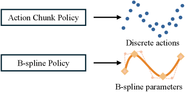
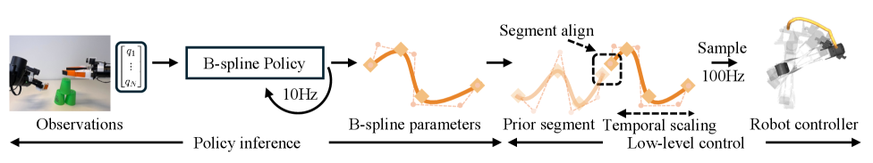

이산적인 action chunk 대신 행동을 연속 B-spline 곡선(knots + control points)으로 파라미터화하는 plug-in 액션 표현. 시간축으로 자유롭게 rescaling할 수 있어 재학습 없이 실행 속도를 높이고, Diffusion Policy·ACT 등 기존 imitation learning 파이프라인에 그대로 결합된다. 실로봇 Cube Picking에서 성공률 20/20를 유지하며 완료 시간을 7.92s→2.45s로 단축(≈4×), Push-T도 1× 대비 4× 실행에서 점수 0.59→0.73·시간 7.19s→2.87s로 개선.
대부분의 모방학습 정책(Diffusion Policy, ACT 등)은 행동을 고정 주파수의 이산 action chunk로 출력한다. 이 표현은 (1) 학습 시 데모의 실행 속도에 고정되어 추론 시 더 빠르게/느리게 실행하기 어렵고, (2) chunk 경계에서 불연속(jerk)이 생기며, (3) 시간 해상도를 바꾸려면 정책을 다시 학습해야 한다. 저자들은 행동을 시간-연속(time-continuous) 곡선으로 표현하면 이 제약을 근본적으로 풀 수 있다고 본다 — 곡선은 임의 주파수로 샘플링 가능하고, 시간축 매핑만으로 속도를 조절할 수 있기 때문이다.
정규화 시간 u에서의 연속 행동을 a(u) = Σi Ni,p(u)·ci 로 정의한다. 여기서 Ni,p(u)는 차수 p의 B-spline 기저 함수, ci는 control point다. 곡선은 knot 벡터로 지지 구간이 결정되며, 정책은 16개 knot와 대응 control point로 구성된 고정 크기 세그먼트 파라미터 [U;C]를 출력한다.
데모 궤적을 B-spline으로 변환할 때, adaptive knot insertion으로 곡률이 높은(curvature ↑) 구간에 표현 용량을 집중 배치하고, 재구성 오차를 허용 오차 ε 이내로 유지한다. ε가 클수록 더 적은 knot로 압축(compression ↑)되며, 실험상 넓은 ε 범위에서 성능이 안정적이다.
정책은 표준 imitation learning 아키텍처(Diffusion Policy의 diffusion head 또는 ACT 계열의 regression head) 위에서 chunk 대신 B-spline 세그먼트 파라미터 [U;C]를 예측한다. 즉 BSP는 백본 정책을 바꾸지 않는 액션 표현 교체(plug-in) 형태다.
파이프라인 실행에서 연속 세그먼트 사이의 경계 불연속을 막기 위해, 새 세그먼트가 직전 실행 행동과 가장 잘 맞는 시점을 탐색한다: t* = argmin0≤t≤λTinf MSE(Snew(t), alast). 이 정렬은 고속 실행(4×)에서 성공률과 실제 달성 속도의 일관성을 크게 높인다.
| 태스크 | 구성 | 성공률 | 완료 시간 | 비교(baseline) |
|---|---|---|---|---|
| Cube Picking (3cm 정밀 파지) | Regression+BSP 4× | 20/20 | 2.45s | 7.92s (1× baseline) |
| Cube Picking | Diffusion+BSP 4× | 20/20 | 2.45s | 3.52s (4× baseline) |
| Table Cleaning (long-horizon) | Regression+BSP 4× | 14/20 | 11.80s | 23.57s (2× baseline) |
| Table Cleaning | Diffusion+BSP 4× | 14/20 | 18.05s | 20.81s (2× baseline) |
| Speed Stacking (bimanual, contact-rich) | Regression+BSP 2× | 16/20 | 17.61s | 8/20 (2× baseline) |
| Speed Stacking | Regression+BSP 4× | 0/20 | — | 하드웨어 추종 한계 초과 |
각 태스크 20회 rollout. Cube Picking은 성공률을 유지하며 완료 시간을 크게 단축, Speed Stacking에서는 4× 실행 시 로봇 자체의 tracking 한계로 실패 — 알고리즘이 아닌 하드웨어 병목.
| 벤치 · 태스크 | 구성 | 성능 | baseline |
|---|---|---|---|
| Push-T (score) | Diffusion+BSP 1× | 75% | 72% |
| Push-T (score / time) | Diffusion+BSP 4× | 0.73 / 2.87s | 0.59 / 7.19s (1×) |
| RoboMimic Lift | Diffusion+BSP | 100% | 100% |
| Coffee press | Diffusion+BSP | 94% | 93% |
| Turn off microwave | Diffusion+BSP | 89% | 77% |
| Close door (가장 어려움) | Regression+BSP | 60% | 40% |
Push-T는 4× 가속에서도 1× baseline보다 높은 점수를 유지하면서 완료 시간을 절반 이하로 단축. RoboCasa의 어려운 long-horizon 태스크에서도 Regression+BSP가 baseline 상회.


Figure 4: 실로봇 태스크 셋업(ARX5) · Figure 5: Speed Stacking 정성 결과.
아직 추가 질문이 없습니다. 이 논문에 대해 더 궁금한 점을 물어보시면 답변을 여기에 정리해 추가합니다.